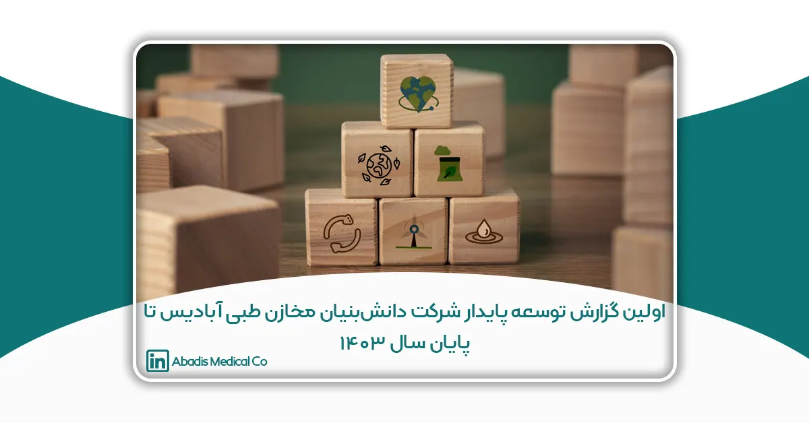

(بر اساس سند تعهد به اهداف توسعه پایدار سازمان ملل متحد – UN SDGs، مصوب هیئتمدیره و سهامداران در اسفند ۱۴۰۲)
چکیده
در عصر حاضر، توسعه پایدار به یکی از مهمترین الزامات صنایع بهداشتی و درمانی، بهویژه در حوزه تجهیزات پزشکی، تبدیل شده است؛ شرکت دانشبنیان مخازن طبی آبادیس، بهعنوان نخستین و بزرگترین تولیدکننده کیسه ساکشن یکبارمصرف در ایران، با رویکردی مسئولانه، گامهای مؤثری در راستای حفظ محیط زیست و ارتقای سلامت جامعه برداشته است.
از جمله این اقدامات میتوان به پروژه کاشت درخت در زاگرس (در دو فاز ۴۰۰ و ۶۰۰ اصله نهال)، طراحی کارخانه سبز با هدف کاهش مصرف انرژی، و تولید محصولات پایدار و ایمن اشاره کرد.
استفاده از کیسههای ساکشن آبادیس، علاوه بر کنترل بهینه پسماندهای بیمارستانی، منجر به صرفهجویی ۳۸ میلیون لیتر آب تا پایان سال ۱۴۰۳ و افزایش قابل توجه ایمنی محیط درمانی شده است.
این گزارش با هدف بررسی اقدامات زیستمحیطی آبادیس و برنامههای توسعه پایدار تا سال 1403 تدوین شده است. نتایج نشان میدهد که توجه همزمان به جنبههای زیستمحیطی، اقتصادی و اجتماعی توسعه پایدار، میتواند نقشی کلیدی در ارتقاء کیفیت خدمات درمانی و حفاظت از منابع طبیعی ایفا کند.
مقدمه
توسعهٔ پایدار، بهعنوان یکی از محورهای اصلی پیشرفت در قرن بیستویکم، جایگاهی کلیدی در صنایع حساس و حیاتی، بهویژه در حوزهٔ تجهیزات پزشکی یافته است. توجهِ همزمان به حفظ محیطزیست، بهرهوری منابع و ارتقای کیفیت خدمات درمانی، سه رکن اساسی این رویکرد را تشکیل میدهند.
شرکت دانشبنیان مخازن طبی آبادیس، بهعنوان نخستین و بزرگترین تولیدکنندهٔ کیسههای ساکشن یکبارمصرف در ایران، با درک این ضرورت، از ابتدای تأسیس تاکنون رویکردی پایدار و مسئولانه را در دستور کار خود قرار داده است. اقدامات این شرکت در زمینهٔ حفاظت از محیطزیست، کنترل پسماندهای بیمارستانی، صرفهجویی در منابع حیاتی و توسعهٔ محصولات بهداشتی پایدار، گواهی روشن بر این تعهد است.
از جمله پروژههای شاخص در این مسیر میتوان به کاشت درختان در منطقهٔ زاگرس (در دو فاز شامل ۴۰۰ و ۶۰۰ اصله نهال)، طراحی کارخانه با رویکرد بهینهسازی مصرف انرژی و آب، و تولید کیسههای ساکشن با حداقل اثر زیستمحیطی اشاره کرد.
این گزارش با هدف بررسی اقدامات توسعهمحور شرکت آبادیس و تشریح اهداف راهبردی آن تا پایان سال ۱۴۰۳ تدوین شده است. در این مسیر، نقش آبادیس در ایجاد تحول در صنعت تجهیزات پزشکی از منظر زیستمحیطی، اجتماعی و اقتصادی بهصورت جامع مورد تحلیل قرار میگیرد.
اقدامات آبادیس در راستای توسعه پایدار تا پایان سال ۱۴۰۳
اقدام اول: آغاز تولید محصولات پایدار در آبادیس
در راستای تحقق اهداف SDG 3 (سلامتی و تندرستی)، SDG 6 (آب پاک و بهداشت) و SDG 12 (مصرف و تولید مسئولانه)، شرکت دانشبنیان مخازن طبی آبادیس تمرکز خود را بر توسعه و تولید محصولات پایدار در حوزهٔ تجهیزات پزشکی قرار داده است.
تولید و عرضهٔ کیسههای ساکشن یکبارمصرف، بهعنوان یکی از نوآوریهای کلیدی شرکت، نقطهٔ آغاز تحولی بنیادین در مدیریت پسماندهای بیمارستانی و کاهش اثرات زیستمحیطی صنعت سلامت بهشمار میآید.
کاهش مصرف منابع
پیش از تولید این محصول، در روش سنتی شستوشوی مخازن ساکشن، برای هر بار استفاده بهطور میانگین به ۱۰ لیتر آب، ۱ لیتر مادهٔ ضدعفونیکننده و حدود ۱۸ دقیقه زمان نیروی انسانی نیاز بود.
با جایگزینی این روش با کیسههای ساکشن یکبارمصرف آبادیس:
• مصرف آب و مواد شیمیایی بهطور کامل حذف شد،
• زمان نیروی انسانی بهصورت چشمگیری صرفهجویی گردید،
• هزینههای عملیاتی بیمارستانها کاهش یافت،
• و منابع طبیعی به شکلی ملموس حفظ شدند.
این تغییر، بهویژه در اتاقهای عمل و بخشهای پرمصرف، موجب صرفهجویی ۳۸ میلیون لیتر آب تا پایان سال ۱۴۰۳ شده است — رقمی که بهصورت پیوسته در حال افزایش است و از آن بهعنوان مدل مقیاسپذیر صرفهجویی منابع (Dynamic Saving Model) یاد میشود.
کنترل پسماندهای بیمارستانی و ارتقای ایمنی
کیسههای ساکشن آبادیس با حذف کامل نیاز به شستوشوی مخازن سنتی، ریسک تماس پرسنل درمانی با مایعات عفونی را بهطور قابل توجهی کاهش دادهاند.
مطالعات میدانی نشان داده است که استفاده از این کیسهها:
• احتمال انتقال عفونت به کادر درمان را بیش از ۸۰٪ کاهش داده است،
• حجم پسابهای آلوده را بهطور چشمگیری کاهش داده،
• و هزینههای تصفیه و امحای پسماند را بهصورت مؤثر پایین آورده است.
این فناوری، فرآیند مدیریت پسماندهای عفونی را سادهتر، ایمنتر و پایدارتر کرده و گامی مهم در ارتقای سلامت محیطهای درمانی و تحقق اهداف توسعه پایدار در صنعت تجهیزات پزشکی بهشمار میرود.
بهبود اثرات زیستمحیطی
استفاده از کیسههای ساکشن یکبارمصرف آبادیس نقش بسزایی در کاهش اثرات زیستمحیطی فرایندهای درمانی ایفا کرده است. نتایج حاصل از پایشهای انجامشده نشان میدهد که بهکارگیری این محصول منجر به:
• کاهش چشمگیر در مصرف آب، انرژی و مواد شیمیایی،
• کاهش انتشار میکروارگانیسمهای خطرناک در محیط،
• کاهش بار میکروبی در فضاهای بیمارستانی،
• کاهش فشار بر تأسیسات تصفیه فاضلاب،
• و بهبود قابلتوجه شاخصهای ایمنی زیستمحیطی شده است.
با این اقدام، آبادیس نشان داده است که افزایش کیفیت خدمات درمانی و حفاظت از محیط زیست میتوانند در مسیری همافزا و همراستا حرکت کنند.
این پروژه، بهعنوان الگوی نوینی از “صنعت سلامت پایدار” در ایران، یکی از مهمترین دستاوردهای شرکت تا پایان سال ۱۴۰۳ بهشمار میرود و چشمانداز روشنی از آیندهای مسئولانه و پایدار در حوزه تجهیزات پزشکی ترسیم میکند.
اقدام دوم: حذف کاتالوگهای چاپی در نمایشگاه ایرانهلث ۱۴۰۱
در راستای تحقق هدف SDG 12 (مصرف و تولید مسئولانه)، شرکت دانشبنیان مخازن طبی آبادیس از سال ۱۴۰۱، با اجرای پروژهی «نمایشگاه بدون کاتالوگ کاغذی» در نمایشگاه ایرانهلث، چاپ هرگونه کاتالوگ کاغذی را بهطور کامل متوقف کرده است.
در این طرح، تمامی اطلاعات فنی و معرفی محصولات بهصورت دیجیتال و از طریق QR Code ارائه شد. بازدیدکنندگان با اسکن کد، به نسخه دیجیتال کاتالوگ دسترسی پیدا کردند و در اقدامی نمادین، دیوار تعهد بدون کاغذ (No Paper Wall) را امضا نمودند تا همراهی خود را با این حرکت سبز اعلام کنند.
از آن سال تاکنون، هیچ نسخهی چاپی از کاتالوگهای آبادیس منتشر نشده است. این تغییر رویکرد، ضمن کاهش چشمگیر مصرف کاغذ و چاپ، موجب صرفهجویی قابلتوجهی در منابع طبیعی و انرژیهای مرتبط با فرآیند چاپ، حملونقل و بازیافت شده است.
برآوردها نشان میدهد که با حذف سالانه حدود ۲,۰۰۰ نسخه کاتالوگ ۱۶ صفحهای (هر نسخه بهطور میانگین ۶۴ گرم کاغذ)، شرکت آبادیس توانسته است از مصرف تقریبی ۱۲۸ کیلوگرم کاغذ در سال جلوگیری کند.
این میزان، معادل صرفهجویی در قطع حدود ۲ درخت بالغ در هر سال و جلوگیری از انتشار حدود ۲۳۰ کیلوگرم دیاکسیدکربن (CO₂) در زنجیره چاپ و حملونقل است.
علاوه بر اثرات زیستمحیطی، این اقدام به دیجیتالی شدن ارتباطات شرکت، بهروزرسانی سریع اطلاعات فنی و کاهش هزینههای تبلیغاتی منجر شد و در عین حال، فرهنگ مصرف آگاهانه و پایدار را در نمایشگاههای صنعت تجهیزات پزشکی ایران ترویج داد.
اقدام سوم: کاشت درخت در منطقه زاگرس برای نجات زاگرس
حفظ محیط زیست یکی از اصول بنیادی توسعه پایدار است. شرکت دانشبنیان مخازن طبی آبادیس، با درک عمیق از مسئولیت اجتماعی خود به عنوان تولیدکننده پیشگام کیسه ساکشن یکبار مصرف، اقدام به اجرای طرحهای مؤثر در راستای حفاظت از منابع طبیعی ایران کرده است. یکی از مهمترین این اقدامات، پروژه کاشت درخت در منطقه زاگرس است؛ منطقهای که سالها با بحرانهایی نظیر آتشسوزی، خشکسالی و تخریب گسترده جنگلها روبهرو بوده است.
اهمیت منطقه زاگرس:
زاگرس، بهعنوان یکی از حیاتیترین اکوسیستمهای ایران، حدود ۴۰ درصد از منابع آب کشور را تأمین میکند و بیش از یکسوم جنگلهای ایران را در خود جای داده است. تخریب این منطقه مستقیماً منجر به بحرانهای زیستمحیطی نظیر فرسایش خاک، کاهش کیفیت هوا، تغییر اقلیم و تهدید منابع آبی میشود. از این رو، حفاظت از زاگرس برای پایداری کشور اهمیت استراتژیک دارد.
ریشه مشکلات:
سالهای اخیر، به دلیل عوامل انسانی (قطع بیرویه درختان، چرای بیرویه دام، آتشسوزیها) و تغییرات اقلیمی (کاهش بارندگی، افزایش دما)، زاگرس آسیبهای شدیدی دیده و احیای این منطقه به یک ضرورت ملی تبدیل شده است.
چرا درخت بلوط؟
آبادیس در این پروژه، با مشورت کارشناسان محیط زیست، درختان بومی همچون بلوط ایرانی را برای کاشت انتخاب کرده است. این گونه جنگلی مقاوم، نقش کلیدی در تثبیت خاک، حفظ منابع آب زیرزمینی و مقابله با خشکسالی دارد و به دلیل عمر طولانی و سازگاری با شرایط اقلیمی زاگرس، بهترین گزینه برای احیای این منطقه محسوب میشود.
اقدامات عملی آبادیس:
تا به امروز، بیش از ۱۰۰۰ اصله نهال بلوط توسط آبادیس در زاگرس کاشته شده و هدفگذاری شرکت، افزایش این تعداد به ۴۰۰۰ اصله درخت تا پایان سال ۱۴۰۵ است. برنامهریزی آبادیس فراتر از کاشت درخت است و شامل:
-
اجرای برنامههای آبیاری و مراقبت منظم
-
همکاری با نهادهای محیط زیستی و جوامع محلی برای برنامههای آموزشی، فرهنگی و حفاظت از درختان کاشته شده
-
پایش دورهای رشد نهالها و سلامت جنگلهای کاشتهشده
تأثیرات زیستمحیطی و سلامت عمومی:
هر درخت بلوط بالغ سالانه تا ۲۱ کیلوگرم دیاکسیدکربن جذب میکند. با تکمیل پروژه ۴۰۰۰ درختی، آبادیس سالانه به جذب بیش از ۸۴ تُن CO₂ کمک خواهد کرد؛ اقدامی که بهبود کیفیت هوا، مقابله با تغییرات اقلیمی، تقویت منابع آبی و کاهش بیماریهای تنفسی را در پی دارد.
حفاظت از منابع طبیعی به طور مستقیم با سلامت عمومی در ارتباط است. کاهش پوشش جنگلی، افزایش آلودگی هوا و نابودی منابع آبی، از عوامل گسترش بیماریهای تنفسی، عفونی و مزمن هستند. با اجرای پروژههای محیط زیستی مانند کاشت درخت در زاگرس، آبادیس گامی فراتر از تولید تجهیزات پزشکی برداشته و در راستای ارتقاء سلامت جامعه و محیط زیست مسئولیتپذیر عمل کرده است.
همسویی با اهداف جهانی توسعه پایدار:
این حرکت سبز بهطور مستقیم با اهداف توسعه پایدار سازمان ملل متحد (SDGs) همراستا است. توسعه پایدار، یک چارچوب جهانی برای تضمین آیندهای بهتر و سالمتر برای همه انسانها و سیاره زمین است. در این راستا، پروژه کاشت درختان زاگرس توسط آبادیس، به ویژه در هدف کلیدی زیر نقشآفرینی میکند:
-
هدف ۱۳: اقدام فوری برای مقابله با تغییرات اقلیمی و پیامدهای آن
با افزایش پوشش گیاهی و جذب گازهای گلخانهای، پروژه آبادیس به کاهش سرعت تغییرات اقلیمی کمک میکند. کاشت درختان بلوط در مناطق آسیبدیده، بهعنوان یک اقدام عملی برای ترمیم منابع طبیعی و مبارزه با گرمایش جهانی شناخته میشود. درختان، بهعنوان فیلترهای طبیعی هوا، میزان دیاکسیدکربن موجود در جو را کاهش میدهند و به خنکتر شدن محیط زیست کمک میکنند. -
آبادیس با اجرای این پروژه نشان میدهد که فعالیتهای اقتصادی و صنعتی میتوانند با مسئولیتپذیری اجتماعی و پایداری محیط زیست همراه باشند. این رویکرد، شرکت را بهعنوان الگویی الهامبخش در میان سایر شرکتهای دانشبنیان و فعالان حوزه تجهیزات پزشکی معرفی میکند.
اقدام چهارم: چیدمان و بازطراحی کارخانه آبادیس در راستای توسعه پایدار
در راستای تحقق اهداف SDG 9 (صنعت، نوآوری و زیرساخت) و SDG 12 (مصرف و تولید مسئولانه)، شرکت دانشبنیان مخازن طبی آبادیس در سال ۱۴۰۳ اقدام به اجرای تغییرات بنیادین در طراحی و چیدمان کارخانه خود نمود. این پروژه با هدف بهینهسازی مسیر تولید، کاهش مصرف انرژی و افزایش بهرهوری عملیاتی اجرا شد.
در این راستا، سرمایهگذاری معادل ۲۰ میلیارد تومان برای انجام بازسازیهای عمرانی، نوسازی زیرساختها و بهروزرسانی خطوط تولید اختصاص یافت. در طراحی جدید، جانمایی ماشینآلات و خطوط تولید بهگونهای انجام شد که مسیر حرکت مواد اولیه تا محصول نهایی کوتاهتر، مستقیمتر و با حداقل تردد داخلی باشد. این ساختار موجب کاهش زمان تولید، کاهش مصرف انرژی و افزایش نظم در فرآیند تولید گردید.
کاهش ضایعات و بهبود عملکرد تولید
واحد کنترل کیفیت شرکت آبادیس، با رویکردی دقیق و منسجم، نقش کلیدی در شناسایی و حذف سریع خطاهای تولید ایفا میکند. این واحد با جلوگیری از تولید محصولات معیوب، میزان ضایعات را به حداقل رسانده و بهرهوری کلی سیستم تولید را افزایش داده است.
ضایعات تولیدی نیز در چرخهای از پیشتعریفشده، بازیافت یا بازتولید میشوند. این رویکرد «چرخه سبز» موجب کاهش هزینههای تولید و حفاظت از منابع طبیعی شده است.
بهداشت صنعتی و مصرف بهینه منابع
در راستای ارتقاء بهداشت محیط کارخانه و کاهش مصرف آب و برق، آبادیس در سال ۱۴۰۳ برنامههای جدیدی برای نظافت صنعتی با کمترین مصرف منابع پیادهسازی کرد. تجهیزات مدرن مورد استفاده در این فرآیند، علاوه بر ارتقاء سطح بهداشت محیط، موجب کاهش قابلتوجه مصرف آب و انرژی الکتریکی در عملیات روزمره کارخانه شدهاند.
تمامی این اقدامات جلوهای از تعهد آبادیس به بهبود مستمر فرآیندهای تولید، کاهش اثرات زیستمحیطی و حرکت در مسیر توسعه پایدار در صنعت تجهیزات پزشکی است.
اقدام پنجم: فرهنگسازی و آموزش در مسیر توسعه پایدار
در راستای تحقق اهداف SDG 4 (آموزش باکیفیت)، SDG 13 (اقدام برای اقلیم) و SDG 12 (مصرف و تولید مسئولانه)، شرکت دانشبنیان مخازن طبی آبادیس، یکی از دشوارترین اما تأثیرگذارترین مأموریتهای خود را در حوزه فرهنگسازی و آموزش عمومی در صنعت تجهیزات پزشکی ایران و در حفاظت از محیط زیست آغاز کرد.
فرهنگسازی برای پذیرش و استفاده از کیسه ساکشن یکبارمصرف
در سالهای ابتدایی، محصول کیسه ساکشن یکبارمصرف در کشور ناشناخته بود و بخش قابلتوجهی از جامعه پزشکی و حتی نهادهای رسمی، این فناوری را نمیپذیرفتند.
در مقاطعی، حتی وزارت بهداشت استفاده از این محصول را ممنوع اعلام کرد؛ اما آبادیس با تکیه بر دانش فنی، مستندات علمی و محتوای آموزشی بینالمللی توانست مسیر را تغییر دهد.
با تدوین یک برنامه منسجم و بلندمدت بازاریابی آموزشی، تیمهای علمی و فنی شرکت از سال ۱۳۹۶ تا ۱۴۰۳ در بیش از:
-
دهها کنگره کنترل عفونت بیمارستانی و ایران کلین
-
نمایشگاههای تخصصی تجهیزات پزشکی در سراسر کشور
-
نشستهای آموزشی دانشگاهی و بیمارستانی
حضور یافته و به آموزش، مستندسازی و ترویج کاربرد کیسههای ساکشن پرداختند.
نتیجه این مسیر مداوم، تجهیز بیش از ۵۲۳ مرکز درمانی در سراسر کشور تا پایان سال ۱۴۰۳ بود.
علاوه بر آن، از سال ۱۴۰۲ صادرات منظم به عراق و از ۱۴۰۳ صادرات پایدار به عمان آغاز شد. این موفقیت، حاصل هفت سال فرهنگسازی علمی و اجتماعی در برابر مقاومت بازار و نهادهای سنتی بود.
امروز، آبادیس نهتنها بهعنوان رهبر بازار داخلی، بلکه بهعنوان بزرگترین تولیدکننده محتوای علمی در جهان درباره تولید و استفاده از کیسههای ساکشن یکبارمصرف شناخته میشود.
ترویج فرهنگ حفاظت از زاگرس
در کنار حوزه صنعت، آبادیس در حوزه مسئولیت اجتماعی محیطزیستی (CSR) نیز با اجرای پروژهی «زاگرس سبز» نقش مهمی در فرهنگسازی برای حفظ جنگلهای بلوط ایفا کرده است.
در نمایشگاه ایرانمد ۲۰۲۵، این شرکت با ارائه محتوای تصویری و آموزشی درباره بحران زاگرس، توانست شورای سیاستگذاری نمایشگاه را ترغیب به کاشت نهال در حاشیه محل برگزاری کند.
همچنین، این اقدام موجب شد سایر شرکتهای تجهیزات پزشکی نیز با الهام از این حرکت، پروژههای مشابهی در زمینه درختکاری آغاز کنند.
از سوی دیگر، داستان «کارزار شکوفایی بلوط در زاگرس» که توسط آبادیس در شبکههای اجتماعی و رویدادهای عمومی مطرح شد، تأثیر چشمگیری در افزایش آگاهی عمومی و مشارکت مردمی در کاشت درخت بلوط داشته است.
در مجموع، تا پایان سال ۱۴۰۳، این طرح در دو مرحله شامل کاشت ۴۰۰ و ۶۰۰ نهال بلوط بومی اجرا شده و به الگویی الهامبخش در حوزهی مسئولیت اجتماعی صنعتی تبدیل گردیده است.
این اقدامات نشان میدهد که توسعه پایدار در آبادیس تنها به فناوری محدود نیست؛ بلکه بر پایه آموزش، فرهنگسازی و تغییر نگرش جامعه به پایداری و محیطزیست استوار است — رویکردی که آبادیس را به یکی از برندهای پیشرو در صنعت سبز سلامت در منطقه تبدیل کرده است.
اقدام ششم: توسعه اشتغال سبز و توانمندسازی نیروی انسانی
در راستای تحقق اهداف SDG 8 (کار شایسته و رشد اقتصادی) و SDG 9 (صنعت، نوآوری و زیرساخت)، شرکت دانشبنیان مخازن طبی آبادیس توانسته است طی سالهای اخیر با تمرکز بر ایجاد اشتغال پایدار و آموزش تخصصی، به یکی از الگوهای موفق «اشتغال سبز» در صنعت تجهیزات پزشکی ایران تبدیل شود.
با گسترش ظرفیت تولید و توسعه واحدهای تحقیقوتوسعه (R&D) و کنترل کیفیت، تعداد کارکنان شرکت از ۲۰ نفر در سال ۱۳۹۸ به بیش از ۵۰ نفر نیروی متخصص و تماموقت در پایان سال ۱۴۰۳ افزایش یافته است. این رشد اشتغال نهتنها در بخش تولید، بلکه در حوزههای طراحی صنعتی، تضمین کیفیت، بازرگانی بینالملل و پشتیبانی فنی نیز محقق شده است.
آبادیس با برگزاری دورههای منظم آموزشی در زمینههای استانداردهای تولید سبز، بهداشت صنعتی، مدیریت پسماند و بهرهوری انرژی، مسیر توانمندسازی نیروی انسانی را بهعنوان بخشی از فرآیند توسعه پایدار خود نهادینه کرده است.
بهبود محیط کار، ایجاد فرصت رشد برای بانوان در مشاغل فنی و مشارکت کارکنان در پروژههای اجتماعی مانند «زاگرس سبز» از دیگر جلوههای مسئولیت اجتماعی شرکت است.
در نتیجه، آبادیس موفق شده است الگویی از ترکیب اشتغال، نوآوری و مسئولیتپذیری اجتماعی ارائه دهد که نشان میدهد توسعه صنعتی میتواند همزمان با ارتقاء سطح معیشت و حفظ محیط زیست پیش برود.
اقدام هفتم: توسعه هوش تجاری (BI) برای سنجش پایداری
در راستای تحقق اهداف SDG 9 (نوآوری صنعتی) و SDG 12 (مصرف و تولید مسئولانه)، شرکت آبادیس با همکاری شرکت ویراکام در سال ۱۴۰۲ اقدام به طراحی و پیادهسازی یک سامانه هوش تجاری (Business Intelligence) جهت پایش و تحلیل شاخصهای پایداری نمود.
این سیستم با بهرهگیری از دادههای واقعی جمعآوریشده از بیش از ۵۰۰ مرکز درمانی، امکان اندازهگیری لحظهای شاخصهای کلیدی عملکرد زیستمحیطی (KPI) را فراهم کرده است. برخی از مهمترین خروجیهای این سامانه عبارتاند از:
-
محاسبه آنلاین میزان صرفهجویی آب بر اساس تعداد کیسههای مصرفی در کشور
-
تحلیل روند کاهش تولید پساب و مواد ضدعفونیکننده در بیمارستانها
-
سنجش اثرات اقتصادی و زیستمحیطی محصولات پایدار
-
پایش اثر پروژههای اجتماعی نظیر کاشت درخت «زاگرس سبز»
این زیرساخت دیجیتال به آبادیس امکان داده است تا برای نخستینبار در صنعت تجهیزات پزشکی ایران، گزارشهای توسعه پایدار خود را بر پایه دادههای واقعی و قابلاعتبارسنجی ارائه کند. داشبورد BI محیطزیستی، اکنون بهعنوان مرجع داخلی شرکت برای تصمیمسازی مورد استفاده قرار میگیرد.
با اجرای این سامانه، آبادیس گامی اساسی در جهت شفافیت، دادهمحوری و هوشمندسازی توسعه پایدار در صنعت سلامت ایران برداشته است.
برآورد صرفهجویی زیستمحیطی و اقتصادی با استفاده از کیسههای ساکشن یکبار مصرف
شرکت دانشبنیان مخازن طبی آبادیس با تولید و توسعه کیسههای ساکشن یکبار مصرف، موفق شده است تأثیرات زیستمحیطی و اقتصادی ناشی از مدیریت مایعات عفونی در بیمارستانها را بهطور چشمگیر کاهش دهد. این نوآوری، ضمن ارتقاء سطح ایمنی و بهداشت، باعث کاهش مصرف منابع و هزینههای عملیاتی مراکز درمانی نیز شده است.
کاهش مصرف آب، مواد شیمیایی و زمان نیروی انسانی
در روشهای سنتی که از مخازن دائمی ساکشن استفاده میشود، هر مخزن برای شستشو نیاز به:
-
۱۰ لیتر آب
-
۱ لیتر ماده ضدعفونیکننده
-
بهطور متوسط ۱۸ دقیقه زمان نیروی خدماتی
داشت.
با جایگزینی این سیستم با کیسههای ساکشن یکبار مصرف آبادیس:
-
مصرف آب و مواد شیمیایی به صفر رسیده است
-
نیاز به نیروی انسانی برای شستشو بهطور کامل حذف شده است
-
فرآیند ضدعفونی بهطور محسوسی کاهش یافته است
صرفهجویی سالانه در اتاق عمل
بر اساس میانگین مصرف در هر عمل جراحی (معمولاً معادل استفاده از یک مخزن ۳ لیتری)، در یک اتاق عمل با یک تخت فعال، سالانه:
-
حدود ۳۶۵ مخزن مصرف میشد (معادل یک عمل در روز)
-
این یعنی مصرف ۳۶۵۰ لیتر آب و ۳۶۵ لیتر ماده ضدعفونیکننده
-
و همچنین حدود ۱۱۰ ساعت نیروی انسانی تنها برای شستشوی مخازن
با جایگزینی این سیستم در چندین اتاق عمل یا بخشهای عمومی (GP)، این صرفهجوییها بهصورت تصاعدی افزایش یافته و هزینههای سالانه بیمارستانها بهطور محسوسی کاهش مییابد.
تأثیرات زیستمحیطی و اقتصادی ملموس
استفاده از کیسههای ساکشن آبادیس باعث:
-
کاهش ورود پساب به محیط زیست
-
کاهش بار آلایندهها بر تأسیسات تصفیه فاضلاب بیمارستانی
-
کاهش مصرف منابع مانند آب و برق
-
کاهش هزینههای مرتبط با خدمات نیروی انسانی، مواد مصرفی و کنترل عفونت
شده است. این دستاوردها، کیسه ساکشن یکبار مصرف آبادیس را به یکی از بهصرفهترین، بهداشتیترین و محیطزیستیترین انتخابها در سیستمهای نوین مدیریت مایعات عفونی تبدیل کرده است.
کاهش هزینههای مالی و افزایش بهرهوری عملیاتی
در روشهای سنتی مدیریت مایعات عفونی بیمارستانی، هزینههای ناشی از مصرف آب، مواد ضدعفونیکننده، نیروی خدماتی و تصفیه پساب آلوده بسیار بالا بود. با بهکارگیری کیسههای ساکشن یکبار مصرف آبادیس:
-
این هزینهها به شکل قابلتوجهی کاهش یافتهاند.
-
هزینه هر کیسه بهطور متوسط حدود ۱ دلار در ایران و ۲ دلار در بازارهای بینالمللی است، که نسبت به مجموع هزینههای سیستم سنتی بسیار مقرونبهصرفهتر است.
-
این صرفهجوییها نهتنها هزینههای بیمارستانی را کاهش داده، بلکه کارایی عملیاتی، بهرهوری پرسنل و نظم فرآیندهای مدیریتی را نیز ارتقاء داده است.
کاهش بار زیستمحیطی و بهبود کنترل عفونت
با حذف فرآیند شستشوی مخازن دائمی:
-
حجم پسابهای آلوده بهشدت کاهش یافته است.
-
فشار بر تأسیسات تصفیه فاضلاب کاهش یافته است.
-
انتشار میکروارگانیسمها و عوامل بیماریزا به محیط زیست تا حد زیادی کنترل شده است.
این تغییرات، در کنار مزایای اقتصادی، تأثیرات مثبت پایداری بر سلامت عمومی و کیفیت محیط زیست دارند.
| معیار | روش سنتی (مخزن دائمی) | روش جدید (کیسه ساکشن آبادیس) |
| مصرف آب به ازای هر مخزن | ۱۰ لیتر | ۰ لیتر |
| مصرف ماده ضدعفونیکننده | ۱ لیتر | ۰ لیتر |
| زمان لازم برای شستشوی هر مخزن | ۱۸ دقیقه( ۰.۳ ساعت) | ۰ دقیقه |
| پساب عفونی تولید شده | بالا | بسیار پایین |
| خطر انتقال عفونت | زیاد | بسیار کم |
| هزینه نیروی انسانی و شستشو | بالا | حذف شده |
| هزینه تقریبی هر عمل | بالا (شامل آب، مواد، خدمات) | ۱ دلار (در ایران) \۲ دلار ( بین المللی) |
| تأثیر زیستمحیطی | منفی (مصرف منابع بالا) | مثبت (صرفهجویی و حفاظت از منابع) |
نتایج و دستاوردها
شرکت دانشبنیان مخازن طبی آبادیس با توسعه و تولید کیسههای ساکشن یکبار مصرف و اجرای پروژههای محیطزیستی مانند «نجات زاگرس»، موفق به خلق دستاوردهایی چشمگیر در حوزههای زیستمحیطی، بهداشتی، اقتصادی و اجتماعی شده است. این نتایج حاصل نوآوری در طراحی محصول، تغییر الگوی مصرف منابع و تعهد جدی سازمان به توسعه پایدار است.
تأثیرات مثبت اقدامات فعلی
صرفهجویی در منابع طبیعی
اقدامات اجرا شده توسط آبادیس، در راستای بهبود عملکرد بیمارستانها، ارتقاء سلامت عمومی و کاهش اثرات زیستمحیطی، نتایج ملموسی داشتهاند. میزان صرفهجویی در مصرف آب و مواد ضدعفونیکننده تا سال ۱۴۰۳:
با حذف فرآیند شستشوی مخازن دائمی در مراکز درمانی:
-
بیش از ۳۸,۵۵۳,۲۷۷ لیتر آب در بیمارستانهای ایران صرفهجویی شده است.
-
مصرف ۳,۳۴۱,۲۰۷ لیتر مواد ضدعفونیکننده حذف شده است که باعث کاهش خطرات زیستمحیطی و هزینهها شده است.
کاهش انتشار آلودگی و پسماندهای عفونی
- از ورود بیش از 9,8۸۱,۲۵۸ لیتر پساب عفونی به محیط زیست ایران جلوگیری شده و در عراق و عمان نیز میلیونها لیتر پساب عفونی بهصورت ایمن مدیریت شده است
ارتقاء ایمنی زیستی بیمارستانها
-
حذف کامل فرآیند شستوشوی مخازن
-
کاهش چشمگیر انتشار عوامل بیماریزا به محیط درمانی
-
ارتقاء سطح ایمنی برای کادر درمان و بیماران، بهویژه در بخشهای حساس
افزایش بهرهوری و کاهش هزینهها
-
افزایش بهرهوری پرسنل درمانی تا ۳۰٪
-
صرفهجویی در زمان و هزینه نیروی خدماتی
-
حذف نیاز به تجهیزات شستوشو و مواد شوینده
تحقق مسئولیت اجتماعی از طریق پروژه نجات زاگرس
-
کاشت ۱۰۰۰ اصله نهال بلوط در فاز نخست
-
برنامهریزی برای کاشت ۴۰۰۰ اصله درخت تا پایان سال ۱۴۰۵
-
اهداف این پروژه: حفظ تنوع زیستی، تثبیت خاک، بهبود کیفیت هوا و منابع آب، و مقابله با تغییرات اقلیمی
ارزش افزوده برای جامعه، محیط زیست و مشتریان
توسعه و استفاده از کیسه ساکشن یکبار مصرف، فراتر از مزایای محصول، ارزشهای گستردهتری برای ذینفعان مختلف ایجاد کرده است:
برای محیط زیست:
-
حفاظت از منابع آبی کشور
-
کاهش بار آلایندهها بر اکوسیستمهای طبیعی
-
بهبود کیفیت خاک و هوا با توسعه پوشش گیاهی و حذف فاضلابهای عفونی
برای مراکز درمانی (مشتریان):
-
کاهش هزینههای عملیاتی ناشی از مصرف آب، مواد شیمیایی و نیروی انسانی
-
بهبود عملکرد در کنترل عفونت بیمارستانی
-
افزایش رضایت پرسنل از فرآیندهای سادهتر و ایمنتر دفع مایعات عفونی
برای جامعه:
-
ارتقاء سطح سلامت عمومی از طریق کاهش شیوع بیماریهای ناشی از آلودگی
-
ترویج فرهنگ مسئولیتپذیری زیستمحیطی
-
ایجاد اشتغال پایدار در حوزههای تولید سبز، محیط زیست و تولید ملی
آبادیس با رویکردی فراتر از تولید صنعتی، در مسیر خلق تأثیر پایدار اجتماعی، اقتصادی و زیستمحیطی حرکت کرده است. این دستاوردها نهتنها جایگاه شرکت را بهعنوان پیشگام در تولید تجهیزات پزشکی پایدار تقویت کردهاند، بلکه الگویی برای سایر فعالان صنعت سلامت نیز ایجاد کردهاند.
جمعبندی و نتیجهگیری
شرکت دانشبنیان مخازن طبی آبادیس با تمرکز بر توسعه محصولات پایدار در تجهیزات پزشکی، بهویژه کیسههای ساکشن یکبار مصرف، موفق شده است مسیر نوآوری، ارتقاء سلامت عمومی و حفاظت از محیط زیست را در یک چارچوب یکپارچه طی کند.
دستاوردهای حاصل از این رویکرد — از جمله:
- صرفهجویی گسترده در مصرف آب
- کاهش مصرف مواد شیمیایی
- کنترل مؤثر پسماندهای عفونی بیمارستانی
- افزایش ایمنی در مراکز درمانی
- و اجرای پروژههای محیطزیستی مانند کاشت درخت در زاگرس
همگی نشان میدهند که توسعه پایدار برای آبادیس یک شعار تبلیغاتی نیست، بلکه راهبردی عملی و مبتنی بر تعهد است.
در شرایطی که بحرانهای زیستمحیطی، منابع محدود طبیعی و بیماریهای واگیردار جهان را تهدید میکنند، انتخاب راهکارهای پایدار در حوزه سلامت بیش از هر زمان ضروری است. آبادیس با ارائه راهحلهای نوین، اثبات کرده است که میتوان همزمان:
- هزینهها را کاهش داد.
- سطح خدمات درمانی را ارتقاء داد.
- و از محیط زیست محافظت کرد.
تحقق کامل اهداف توسعه پایدار نیازمند مشارکت همگانی است، بهویژه در بخش سلامت که یکی از تأثیرگذارترین حوزهها بر زندگی انسانهاست.
دعوت به همراهی
شرکت مخازن طبی آبادیس از تمامی بیمارستانها، مراکز درمانی، سازمانهای سلامت و فعالان حوزه پزشکی دعوت میکند تا با همراهی در این مسیر، نهتنها به ارتقاء سطح خدمات درمانی کمک کنند، بلکه سهم مؤثری در حفاظت از محیط زیست و منابع طبیعی کشور ایفا نمایند.
با انتخاب آگاهانه، میتوان جهانی ایمنتر، پاکتر و انسانیتر ساخت.
منابع
- شرکت دانشبنیان مخازن طبی آبادیس. (۱۴۰۳).
بهبود اثرات زیستمحیطی ناشی از پسابهای عفونی بیمارستانها با استفاده از کیسه ساکشن یکبار مصرف.
دسترسی از:
https://abadis-med.com/improving-the-environmental-effects-of-nosocomial-infectious-effluents-by-using-disposable-suction-liner-bagsfa/ - شرکت دانشبنیان مخازن طبی آبادیس. (۱۴۰۳).
دستاوردهای شرکت مخازن طبی آبادیس در توسعه کیسه ساکشن یکبار مصرف: تحولی در مدیریت بیمارستانی و حفاظت از محیط زیست.
دسترسی از:
https://abadis-med.com/دستاوردهای-شرکت-مخازن-طبی-آبادیس-در-توسعه-کیسه-ساکشن/ - شرکت دانشبنیان مخازن طبی آبادیس. (۱۴۰۳).
توسعه پایدار در تجهیزات پزشکی.
دسترسی از:
https://abadis-med.com/توسعه-پایدار-در-تجهیزات-پزشکی/ - World Health Organization (WHO). (2014).
Safe management of wastes from health-care activities (2nd ed.).
Geneva: WHO Press.
https://apps.who.int/iris/handle/10665/85349
(راهنمای رسمی WHO درباره مدیریت پسماندهای بهداشتی و عفونی با رویکرد ایمنی و محیط زیست) - Kwak, S.Y., An, J.H., & Lee, J.Y. (2022).
Sustainable medical waste management during the COVID-19 pandemic: A critical review.
Journal of Environmental Management, 302, 113992.
https://doi.org/10.1016/j.jenvman.2021.113992
(مروری بر مدیریت پایدار پسماندهای پزشکی در دوره بحران کرونا – مرجع معتبر از Elsevier) - Jamieson, D., et al. (2021).
Sustainability in medical device design: A systems thinking approach.
Health Affairs, 40(4), 651–658.
https://doi.org/10.1377/hlthaff.2020.02171
(تحلیل سیاستمحور درباره طراحی تجهیزات پزشکی با رویکرد توسعه پایدار)